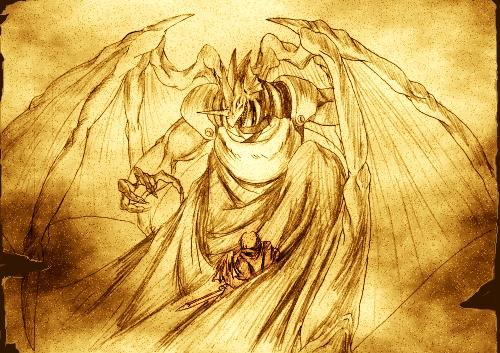

お絵かき掲示板
皆様のイラストギャラリー 6
| －注意書き－ | |
| お絵かき掲示板にいただいた 名作イラストの数々をご紹介！ →の方の数字を選択していただければ 画像を閲覧できます。 ここには2005年10月～2005年12月までに描かれた物を 掲載しています。 |
これら素晴らしい絵を描いてくださった作者の皆様、 本当にありがとうございます！ ※PCの場合、F11キーで画面を広くする事でいくらか 見やすくなると思います、もう一度押すと元通り。 |
| 
|
||
|
SilverSecond 7周年記念イラスト集

|
フレームが表示されていない方はクリック